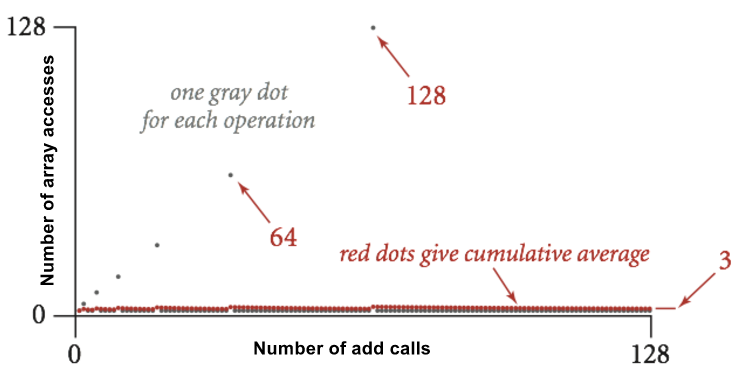

Lecture 19 - 03/03
Asymptotics 3: Amortized and Empirical Analysis
- Let's say we are creating a data type for an array-like structure
- Naive resizing: when adding to array but array capacity full, create new array of size+1 elements and copy over, then add element
- This has terrible runtime since for adding N items to the array, we have to do roughly N∗N/2 element copies, which can get really large
- The smarter way was to instead of resizing size by adding a constant (in this case 1), resize by multiplying by a constant (such as 2)
- Now, whenever adding an element but array at full capacity, create new array of 2*size elements and copy over, then add the element
- If we plot the runtime of this smarter resizing method, most of the add operations are constant time, with a few operations (those everytime resize is needed) being very expensive:
 - Worst case runtime (when on resize calls) is Θ(N)
- We will prove below that average runtime is Θ(1):
- Each time we have to resize the size N array for an add call, we must do N read calls to the old array, N write calls to the new array (thus copying the new array over), and 1 write call to add the new element, for a total call-time of 2N+1
- Each time we call add but don't need to resize, we have a simple call-time of 1 for the single write call
- The table below shows cumulative cost for N=1 to 14:

- This table shows the average runtime is 44/14≈3.142
- GOAL: show that this average runtime of ≈3 holds as N gets even larger
Using Potentials for Amortization
- The idea is in the cheaper calls, we build up a saved up "potential" to expend on the more expensive calls, and weight the potentials such that at any given expensive call, all the cumulated potential from the most recent group of cheap calls is enough to complete the expensive call
- Let us define potential Φi≥0 as the potential of the ith operation, with Φ0=0
- Let us define amortized cost of the ith operation as ai=ci+Φi+1−Φi
- Here, ci is the real cost of the operation
- ai is analagous to the deposit we make, ci the withdrawl taken, and Φ the total holdings (taking difference between two timesteps tells us how much potential/holdings we currently have to expend)
- On cheap calls, we pick ai>ci, which increases Φ
- On expensive calls, we pick ai such that Φi stays positive
- For our array data structure example, we want ai∈Θ(1),Φi≥0 ∀ i
- To do this, we must choose ai such that Φi stays ahead of ci
- We choose some ai that satisfies our criteria for all the i timesteps, and then use the difference between the current timestep's amortized cost and total cost to find the change in potential; this is then added to current potential to update our amount of potential; repeat for next timestep
- This is visualized below, with the choice of 3 for all amortized costs:
- Note: total cost was calculated with resize-adds costing 2i+1 and non-resize-adds costing 1
- This shows that 3 for amortized cost is not sufficient, as for i=5 we get a negative potential
- This means that the average runtime for this function is greater than 3
- Now, if we use an amortized cost of 5 we get the following relationship:

- This shows that the true average runtime is less than or equal to 5
- Note, we have only shown this for i∈[1,14] and not rigorously shown this for all values of i
- Rigorous analysis out of scope for this class (covered in CS 70/170), we will resort to using intuition for this class
Empirical Analysis:
- We say for two functions f,g: f(N) ~ g(N) iff limn→∞f(N)g(N)=1
- To determine, we ignore lower order terms, and only look at highest order terms AND their coefficients (since we want the limit to equal 1, not some k)
- We use this analysis to estimate runtime - crude, experimental curve fitting
- For example, let's say our true runtime R(N) asymptotically approaches f=aNb for some constants a,b
- Then we can estimate function runtime by finding a,b such that f ~ R(N)
- a,b determined from actual experimental data points (run function for different size inputs, find time taken, and use log math/algebra to determine what a,b are from resulting data points)